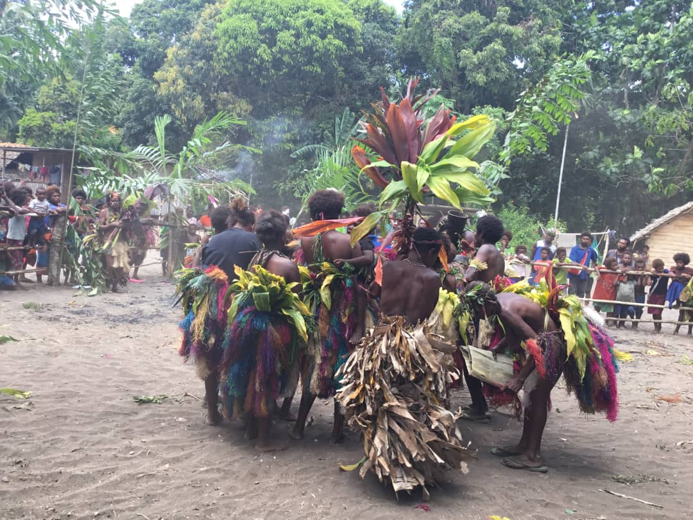
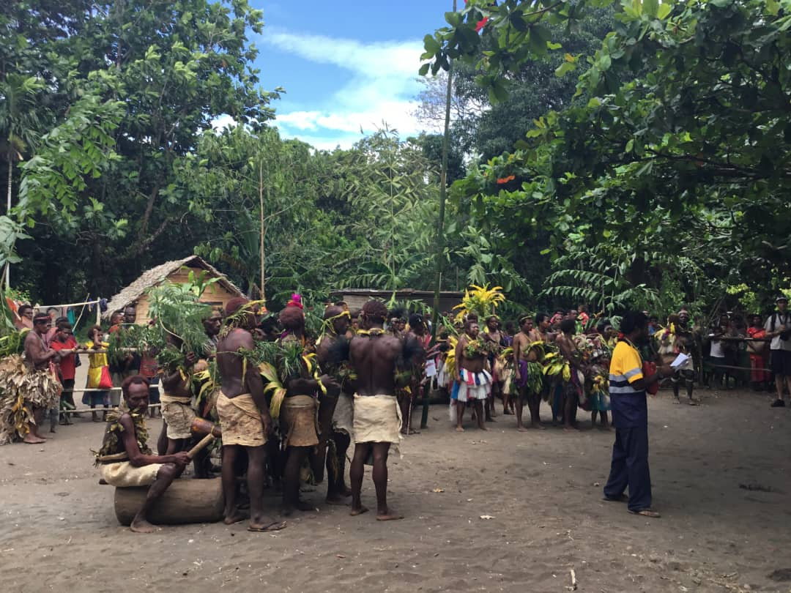
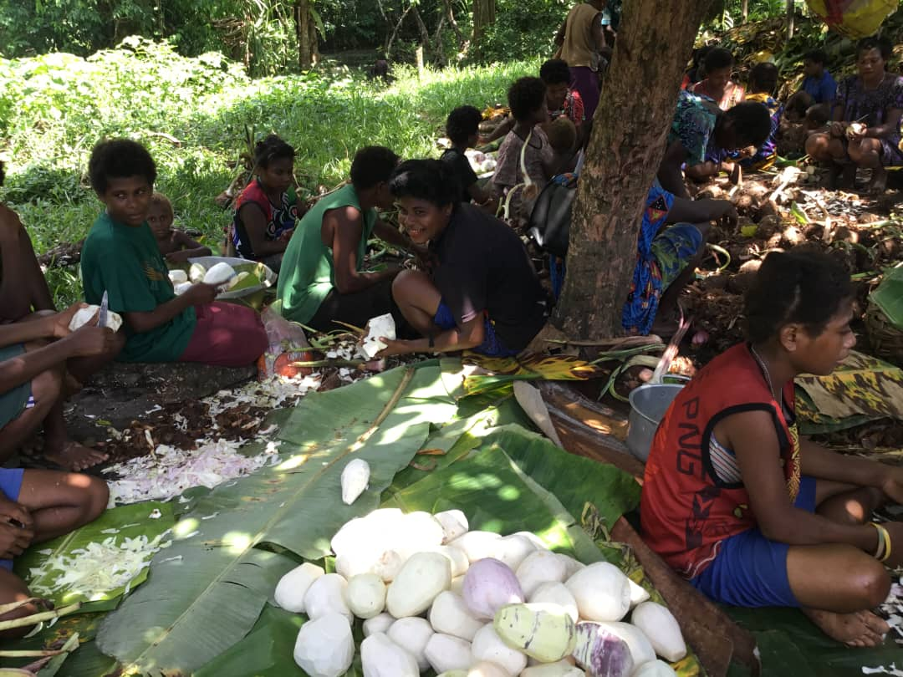
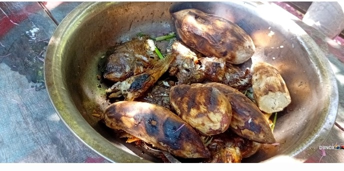

The Lote Culture
Traditional knowledge, ancient customs and welcoming communities of Pomio.
Experience a Village StayThe Lote People & Melkoi LLG
The Lote are an Indigenous people living in the Pomio District of East New Britain Province, Papua New Guinea. Melkoi Local Level Government (LLG) represents these communities in the regional governance structure, preserving and promoting traditional cultures while engaging with modern development.
Who Are the Lote?
The Lote people are one of the major Indigenous groups in the Pomio District, living in harmony with the rainforest for thousands of years. They have developed sophisticated knowledge systems for managing forest resources, cultivating food crops, and harvesting marine resources from the nearby reefs and ocean.
The Lote maintain a distinct cultural identity through their language, traditional practices, and connection to ancestral lands. Their communities are organized around extended family groups and clans, with decision-making based on consensus and deep respect for elders and traditional knowledge holders.
Lote Language: The Lote language is part of the Austronesian language family and remains the primary language spoken in most Lote communities, though Tok Pisin and English are increasingly used for inter-group communication and education.


Traditional Crafts & Artisan Knowledge
Lote artisans create beautiful handcrafted items using traditional techniques passed down through generations. These crafts are not merely decorative - they represent cultural knowledge, spiritual beliefs, and the Lote relationship with their environment.
Traditional Lote Crafts:
- Woven Baskets: Intricate baskets woven from tree fibers, palm leaves, and cane - each pattern tells a story of family history or spiritual significance
- Woodcarving: Skilled wood carvers create masks, figurines, and ceremonial objects from fallen forest trees, often featuring ancestral designs
- Shell & Bone Work: Artisans craft jewelry and implements from shells and bone, reflecting the marine importance in Lote culture
- Tapa Cloth: Traditional bark cloth created through beating and processing, decorated with natural dyes and traditional patterns
- Coconut & Bamboo Work: Practical and decorative items crafted from coconut husks and bamboo
When you purchase Lote crafts, you directly support artisans and help maintain these endangered cultural practices for future generations.
Traditional Food & Hunting Practices
The Lote have developed sophisticated food systems adapted to their tropical rainforest environment. Traditional hunting and gathering, combined with subsistence agriculture, provide food security while maintaining ecological balance.
Traditional Food Sources:
- Sago: The starch staple processed from palm trees, providing carbohydrates and nutrition
- Taro, Yams & Sweet Potato: Root crops cultivated in forest gardens with traditional intercropping methods
- Coconut & Fruit Trees: Perennial crops providing nutrition and economic opportunities
- Forest Game: Traditional hunting of tree kangaroos, cassowaries, and other wildlife using sustainable practices developed over centuries
- Seafood: Fishing traditional reef areas and river systems using intimate knowledge of seasonal patterns and species behavior
These food systems are knowledge-intensive and environmentally sustainable. When communities protect their forests as conservation areas, they also safeguard these traditional food security systems.

Ceremonies, Spirituality & Cultural Values
Lote culture centers on a deep spiritual connection to nature and a complex system of beliefs that guide relationships between people, ancestors, and the natural world. Ceremonies and rituals mark important transitions and maintain social harmony.
Important Lote Traditions:
- Initiation Ceremonies: Rituals marking the transition from childhood to adulthood, involving sacred teachings and communal celebrations
- Ancestral Veneration: Honoring deceased family members and recognizing the continued presence and guidance of ancestors
- Healing Practices: Traditional medicine using forest plants combined with spiritual healing techniques passed through generations
- Land Ownership & Stewardship: Customary landholding practices linking families to specific territories and associated responsibilities
- Seasonal Celebrations: Festivals marking fishing seasons, harvest times, and celestial events
These cultural practices remain central to Lote identity and community cohesion, even as younger generations engage with modern education and opportunities.
Cultural Tourism & Community Development
Through village immersion experiences and homestays, visitors can learn directly from Lote community members about their culture, traditions, and modern life. This cultural exchange provides important income for communities while creating meaningful intercultural understanding.
Sustainable Cultural Tourism Benefits:
- Income for artisans, guides, and hospitality professionals
- Educational opportunity for younger Lote people to learn traditional skills valued by visitors
- Global recognition and respect for Indigenous knowledge and cultural practices
- Economic incentive to maintain cultural practices rather than abandon them for cash employment
- Foreign exchange revenue for community development projects
Responsible cultural tourism helps safeguard Lote culture for future generations by demonstrating its ongoing value and relevance in the modern world.

Challenges & Cultural Preservation
Like Indigenous communities worldwide, the Lote face significant challenges to cultural preservation in the modern era. Globalization, education in dominant languages, and economic pressures create incentives for younger generations to migrate to cities or abandon traditional practices.
Conservation-linked tourism offers a solution by creating economic value for cultural knowledge and practices. When Lote culture becomes an asset rather than an impediment to development, communities are more likely to preserve it for future generations.